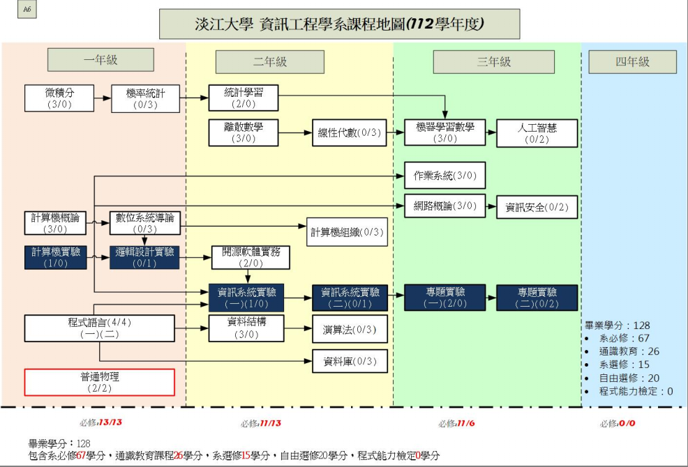
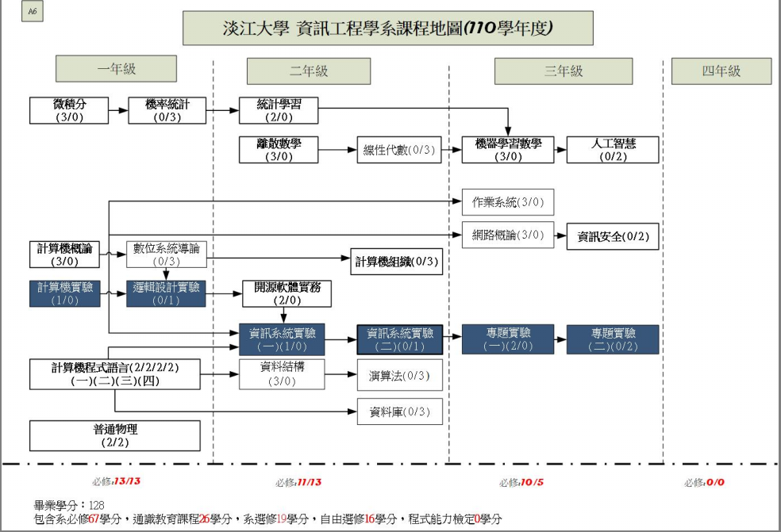
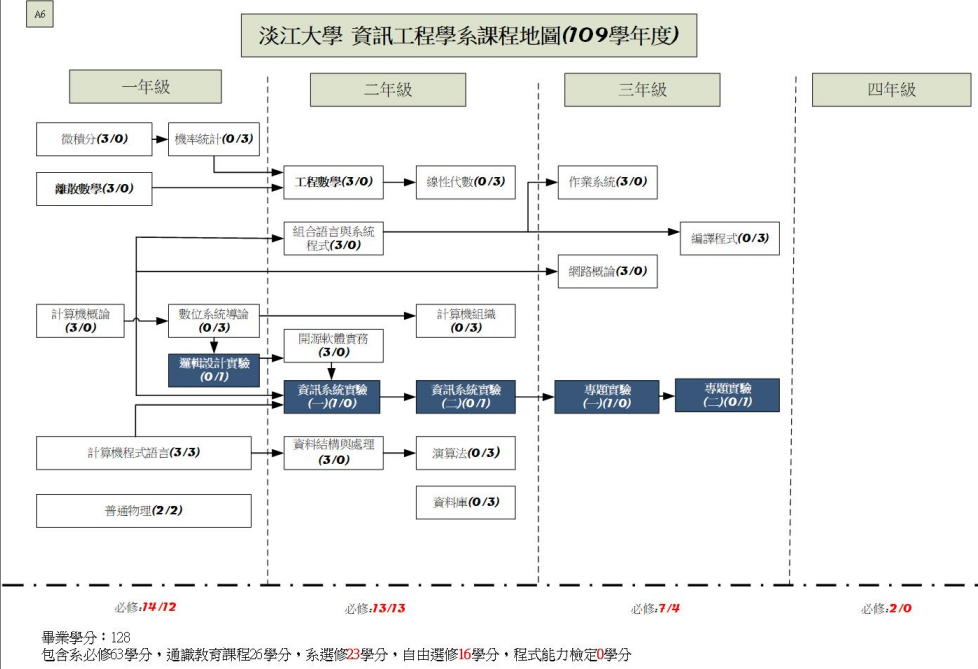
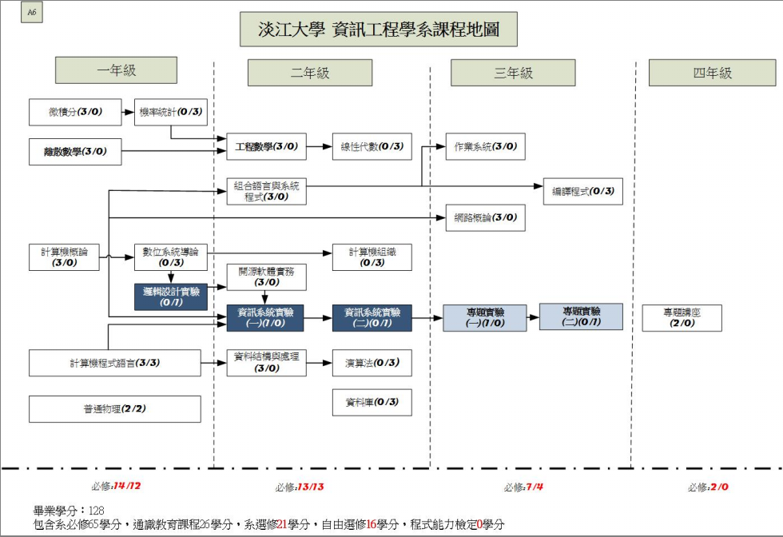

課程特色
資訊科技的發展日新月異，新穎嶄新的技術不斷地推陳出新，為了讓學生們可以與技術與時代接軌，並且因應變動之產業需求，淡江資訊工程學系課程之規劃兼顧理論與實務，並且深度與廣度並重。在淡江資訊工程系，每位學生都需修畢系上所規劃之「專業必修」課程，以奠定資訊領域之專業基礎。此外，系上亦規劃了與未來產業與趨勢相連結之「專業選修」課程。
「專業必修課程」之規劃，主要依照年級而有不同之主題：
- 大一階段，著重於基礎資訊素養與實力養成，其課程包含計算機概論、基礎與進階程式語言、離散數學與機率統計相關課程。
- 大二階段，著重於進階的理論背景實力，其課程包含統計學習、資料結構、演算法、線性代數等；除此之外亦包含基礎資訊系統知識課程，其課程包含有資料庫、開源軟體實務、計算機組織等。
- 大三階段，著重於理論與實務之養成，其課程包含有網路概論、作業系統與人工智慧相關課程。而大三最重要的必修課程為「專題實驗」課程，在該課程中學生需找系上專任教師來指導，學生需將所學之專業知識來發想一可運作且實用之系統，並且於系上所舉辦之資訊週活動的場域上現場演示所實做之系統。
- 人工智慧相關課程：機率統計、統計學習、機器學習數學、人工智慧等必修課程。
除了上述必修課程之外，淡江資訊工程系的老師們亦規劃了許多「專業選修」課程，其內容包含有以下幾個面向之專業課程：物聯網/無線網路、大數據分析、嵌入式系統、多媒體、電腦視覺、資訊安全技術等。每個面向之專業課程會開設二到三門之系列課程來讓學生們能有一套完整的訓練體系。除了上述選修外，系上亦規劃學生可以修習企業應用實務課程，於課程過程至系上所挑選之企業上班實習，來讓學生能夠即早的與產業接軌。
而本系亦有規劃表現優異且有志高深研究的同學能夠於五年內取得學士以及碩士學歷。除此之外，本系亦有與多所國外知名大學簽署雙聯碩士學位課程，讓學生們可以於大學畢業後的兩年內一併取得兩個碩士學位。
近年來各個領域皆希望能夠與資訊觀念結合，來促進原有產業之轉型，相信在未來幾年資訊人材依然是供不應求的狀態，淡江資訊工程系能夠提供良好的學習與自我提升之環境，讓同學們畢業後可以於資訊產業們佔有一席之地！
課程設計
【大學日間部】112~113學年度
【大學日間部】110~111學年度
【大學日間部】109學年度
【大學日間部】108學年度
【大學日間部】選修科目
正規語言與自動機理論、多媒體處理技術、物件導向軟體工程、知識商務、個人通訊系統、統計學、軟體工程導論、軟體專案管理、嵌入式系統建置、無線區域及個人網路、無線區域網路、無線網路安全、無線網路概論、資料探勘、資訊安全導論、資訊與通訊科技發展、電子商務概論、管理資訊系統、網路安全、網路程式設計、影像處理、企業應用實務、無線感測網路監控技術於生態觀測、雲端計算、虛擬化技術、進階C語言實務、大數據分析技法、物聯網概論、數據科學實務：使用Python、物聯網安全、數位影像處理專題、機器學習概論、深度學習概論、人工智慧之深度計算入門、資料壓縮、金融科技安全、財金跨行系統實務與操作、工程數學、組合語言與系統程式、編譯程式、語言結構、電子商務、數值分析、資訊通訊安全管理、人工智慧與專家系統概論、決策支援系統、軟體開發與專案管理、系統分析與設計、ＪＡＶＡ程式設計、企業資源規劃、無線網路、電腦模擬、資訊通訊管理實務、網路應用設計、進階程式設計、企業資訊系統、專利管理、行動裝置程式設計、行動通訊安全、企業系統開發實境。
備註：本系會因應趨勢陸續開設新的選修科目供同學們修習。